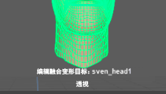

形变编辑器是用于创建、编辑和管理形变以进行形变创作的主要工具。
若要打开形变编辑器，请执行以下操作：
- 单击“雕刻”(Sculpting)工具架上的 图标。
- 在主菜单栏中：(Windows > Animation Editors > Shape Editor)
- 在面板中：(Panels > Panel > Shape Editor)
有关形变编辑器各部分的信息，请参见此图下面的表：
|
调整“形变编辑器”(Shape Editor)布局 |
|
|
1 - 菜单命令 |
有关所有菜单命令的列表，请参见下文。 |
|
2 - 创建融合变形(Create Blend Shape) |
单击此按钮可为选定对象创建融合形变变形器 (BSD)。它会自动根据对象信息设置正确的变形顺序。 此外，您也可以在形变编辑器的空白区域中单击鼠标右键，然后选择“添加融合形变变形器”(Add Blend Shape Deformer)。 如果要在创建 BSD 之前设置选项，请选择(Shapes > Create Blend Shape Deformer) > 有关详细信息，请参见创建融合形变变形器。 |
|
3 - 添加目标(Add Target)（形状） |
选择融合形变变形器并单击该按钮一次或多次，可使用自动设置创建空目标形状。系统将自动选择目标形状的“编辑”(Edit)按钮，以便您能够立即使此形状的基础对象变形。 此外，您还可以选择(Shapes > Add Target) > 有关详细信息，请参见添加目标形状。 |
|
4 - 融合形变变形器 |
表示基础对象上的每个融合形变变形器（融合变形节点）。此节点是其包含的所有目标形状的“容器”。只有一起计算这些目标形状时，才会使对象变形。 将融合形变变形器拖放到树中，可更改其顺序。此外，您还可以创建融合形变变形器组。 在融合形变变形器名称上单击鼠标右键，可打开包含下列命令的上下文菜单：“添加目标”(Add Target)、“添加当前选择作为目标”(Add Selection as Target)、“添加当前选择作为组合目标”(Add Selection as Combination Target)、“选择基础网格”(Select Base mesh)、“选择融合变形节点”(Select Blend Shape node)、“在节点编辑器中查看”(View in Node Editor)、“单放/取消单放”(Solo/Unsolo)、“导出”(Export)、“导入”(Import)、“分组”(Group)、“重命名”(Rename)和“删除”(Delete)。 |
|
5 - 目标形状 |
也称为“目标”或“融合变形目标”，目标形状是您为使基础对象变形而创建的单个“姿势”。顶点与原始状态下基础对象（基础形状）的偏移保存在每个目标形状中。 图标的颜色指示目标形状的类型：橙色表示对象空间，绿色表示切线空间，蓝色表示变换空间。 将目标形状拖放到树中的融合形变变形器内，可更改其顺序或将其从组中移除。 在目标形状名称上单击鼠标右键，可打开包含下列命令的上下文菜单：“关键帧”(Key)、“重置”(Reset)、“添加中间帧目标”(Add In-Between Target)、“添加当前选择作为中间帧目标”(Add Selection as In-Between Target)、“重建目标”(Rebuild Target)、“复制目标”(Duplicate Target)、“合并目标”(Merge Targets)、“翻转目标”(Flip Target)、“镜像目标”(Mirror Target)、“添加组合目标”(Add Combination Target)、“选择组合驱动者”(Select Combination Drivers)、“选择网格”(Select Mesh)、“重建目标”(Rebuild Target)、“单放/取消单放”(Solo/Unsolo)、“导出”(Export)、“分组”(Group)、“重命名”(Rename)和“删除”(Delete)。 |
|
6 - 组 |
可以将目标形状和融合形变变形器分为若干组和子组。有关详细信息，请参见下面的“分组”(Group)图标 |
|
7 - 可见性/单放 |
单击该圆可切换目标形状对基础形状所产生效果的可见性。此外，您还可以选择多个项目，然后单击其中一个项目对应的圆，以切换所有项目的可见性。 您可单击融合形变变形器或组对应的圆，查看其所有目标形状对融合变形的效果。切换 BSD 或组的可见性时，其目标形状不会更改可见性状态。 若要单放选定项目对融合变形的效果，请按 Alt 键并单击小圆，或者在选定项目的名称上单击鼠标右键，然后选择“单放/取消单放”(Solo/Unsolo)。 可见性处于禁用状态时，权重和编辑将会禁用。 |
|
8 - 权重/驱动者(Weight/Drivers) |
拖动滑块可将该目标形状、组或融合形变变形器的权重（影响）设置为一个介于 0.000 和 1.000 之间的值，或者在“权重”(Weight)文本框中输入一个值。 设置为 0 时，意味着目标形状、组或融合形变变形器对基础形状没有影响。设置为 1 时，表示 100% 影响。 在“权重”(Weight)文本框中，可以输入超出 0.000 ~ 1.000 范围的值，以反转（负值）或放大（超过 1 的值）目标的影响。 如果输入的值大于当前最大值（默认值为 1），则最大值更改为该值的两倍，或者如果该值的两倍大于 10，则更改为 10。 如果输入的值小于当前最小值（默认值为 0），则最小值更改为该值的两倍，或者如果该值的两倍小于 -10，则更改为 -10。 如果输入的值小于 0 或大于 1.000，则权重滑块的长度将会更改，以反映新的值范围。 有关详细信息，请参见设置目标形状的权重。 |
|
9 - 编辑(Edit) |
单击“编辑”(Edit)按钮，可进入此目标形状的编辑模式。使用雕刻、移动、旋转和缩放工具，可在视图中修改基础对象或相应的目标对象。完成后，再次单击“编辑”(Edit)按钮，以保存对此目标形状所做的更改并退出编辑模式。 每次只能进入一个目标形状的编辑模式，其“权重”(Weight)值必须大于 0。建议使用值 1 进行编辑。 有关详细信息，请参见编辑目标形状。 |
|
10 - 关键帧(Key) |
单击“关键帧”(Key)图标 单击融合形变变形器滑块旁边的“关键帧”(Key)图标，为融合变形的总权重设置关键帧。有关详细信息，请参见缩放融合变形的影响。 此外，您还可以使用鼠标中键将此图标拖放到“时间滑块”(Time Slider)中的某帧上，为目标形状设置关键帧。 在“关键帧”(Key)图标上单击鼠标右键，打开包含下列命令的菜单：“当前关键帧”(Key at current)、“0 处关键帧”(Key at 0)、“1 处关键帧”(Key at 1)或“移除关键帧”(Remove key)。 有关详细信息，请参见设置目标形状权重的关键帧。 |
|
11 - 图标 |
|
|
12 - 过滤器 |
在此处输入文本，将列表中显示的项目缩减为包含指定文本的项目。 |
 ，可在该帧处选定目标形状或组的当前“权重”(Weight)值上设置关键帧。
，可在该帧处选定目标形状或组的当前“权重”(Weight)值上设置关键帧。
 将删除在形变编辑器中选择的所有内容：目标形状、融合形变变形器或组。
将删除在形变编辑器中选择的所有内容：目标形状、融合形变变形器或组。
形变编辑器的菜单命令
File 菜单
- “导出形状”(Export Shapes)将选定的目标形状导出为形状 (*.shp) 文件。还可以在融合形变变形器或目标形状上单击鼠标右键，然后选择“导出”(Export)。
- “导入形状”(Import Shapes)将导入选定融合形变变形器的目标形状 (*.shp) 文件。此外，您还可以在融合形变变形器上单击鼠标右键，然后选择“导入”(Import)。
有关详细信息，请参见导入和导出融合变形。
编辑菜单
- “分组”(Group)将创建一个包含选定目标形状或融合形变变形器的组。如果未选中任何对象，则将创建一个空组。此外，您也可以按 Ctrl+G 或单击“分组”(Group)图标
 。有关详细信息，请参见创建目标形状或融合形变变形器组。
。有关详细信息，请参见创建目标形状或融合形变变形器组。
- “取消选择全部”(Deselect All)将取消选择已选中的所有内容：基础对象、BSD、目标形状或组。此外，您也可以按 Alt+D。
创建菜单
- “融合形变变形器”(Blend Shape Deformer)将为选定对象创建融合形变变形器（融合变形节点）。
选择
 可在创建融合形变变形器之前先在融合变形选项(Blend Shape Options)中设置它，例如，在“高级”(Advanced)选项卡上选择“变形顺序”(Deformation Order)。请参见创建融合形变变形器。
可在创建融合形变变形器之前先在融合变形选项(Blend Shape Options)中设置它，例如，在“高级”(Advanced)选项卡上选择“变形顺序”(Deformation Order)。请参见创建融合形变变形器。
- “添加目标”(Add Target)将为选定的融合形变变形器创建新的目标形状，这与单击“添加目标”(Add Target)按钮相同。
选择
可创建不同类型的目标形状（例如，切线空间或变换空间类型）。请参见添加融合变形目标选项(Add Blend Shape Target Options)。
- “添加当前选择作为目标”(Add Selection as Target)将基础对象的当前融合变形状态烘焙到新的目标形状。请参见从融合变形状态创建新的目标形状。还可以使用此命令从添加到融合形变变形器的选定目标对象创建目标形状。请参见添加目标形状。
选择
可创建不同类型的目标形状（例如，切线空间或变换空间类型）。请参见添加融合变形目标选项(Add Blend Shape Target Options)。
- “添加中间帧目标”(Add In-Between Target)将以当前权重为选定的目标形状创建中间帧目标形状。请参见添加中间帧目标形状。
- “添加当前选择作为中间帧目标”(Add Selection as In-Between Target)将根据所选的基础或目标对象以当前权重为选定的目标形状创建中间帧目标形状 - 添加中间帧目标形状。
- “添加组合目标”(Add Combination Target)将创建由一个或多个其他目标形状驱动的目标形状。编辑驱动者（起作用的）目标形状或其权重时，组合目标形状也会受影响。请参见创建组合目标形状。
形变(Shapes)菜单
- 按顺序选择两个或更多目标形状时，“设置为组合目标”(Set as Combination Target)可使上一个选定的目标形状成为组合目标形状。请参见创建组合目标形状。
- “复制目标”(Duplicate Target)将创建一个或一组目标形状的副本。此外，您也可以按 Ctrl+D。有关详细信息，请参见复制目标形状。
- “翻转目标”(Flip Target)将翻转选定目标形状在基础对象的轴或您在“选项”(Options)框（单击 图标）中定义的拓扑上的变形。有关详细信息，请参见翻转目标形状。
- “镜像目标”(Mirror Target)将使用基础对象的轴或您在“选项”(Options)框（单击 图标）中定义的拓扑向选定目标形状添加其变形的镜像。有关详细信息，请参见镜像目标形状。
- “重建目标”(Rebuild Target)将基于选定的目标形状创建新对象，这与单击“重建融合变形目标”(Rebuild Blend Shape Target)图标 相同。请参见从目标形状创建新对象。
- “关键帧”(Key)将为所有选定目标形状或组的当前权重值设置关键帧。请参见设置目标形状权重的关键帧。
- “重置”(Reset)将选定目标形状或组的权重值设置为零 (0)。请参见设置目标形状的权重。
选项菜单
- “显示编辑 HUD”(Show Edit HUD)在视口底部显示或隐藏通知您正在编辑的目标的消息。

“显示编辑 HUD”(Show Edit HUD)消息